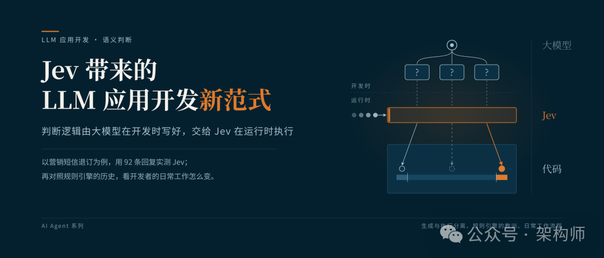
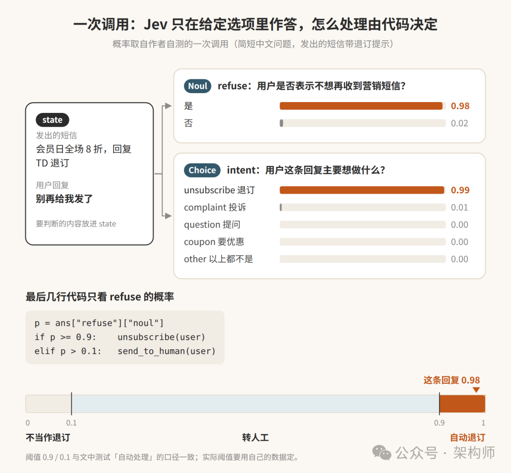
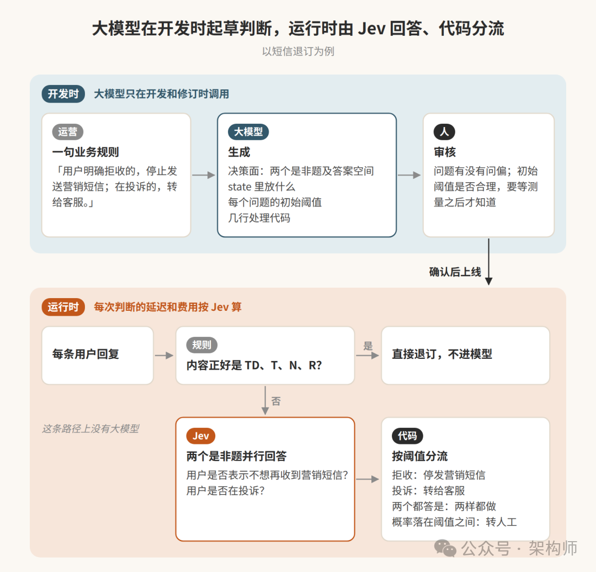
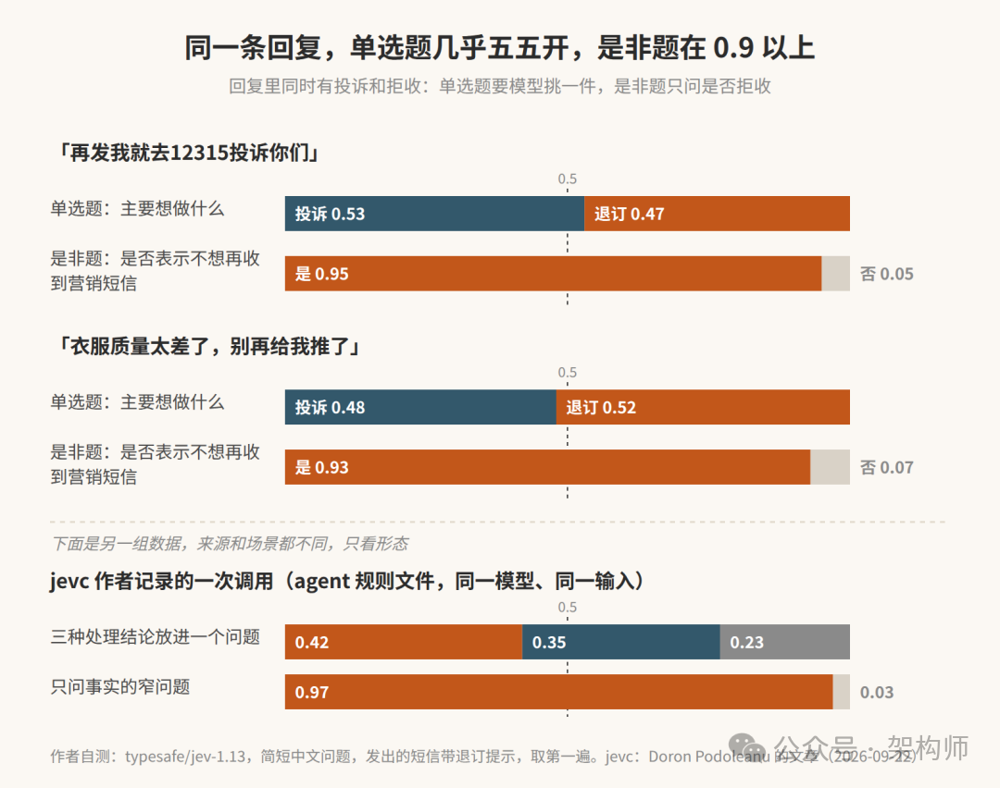
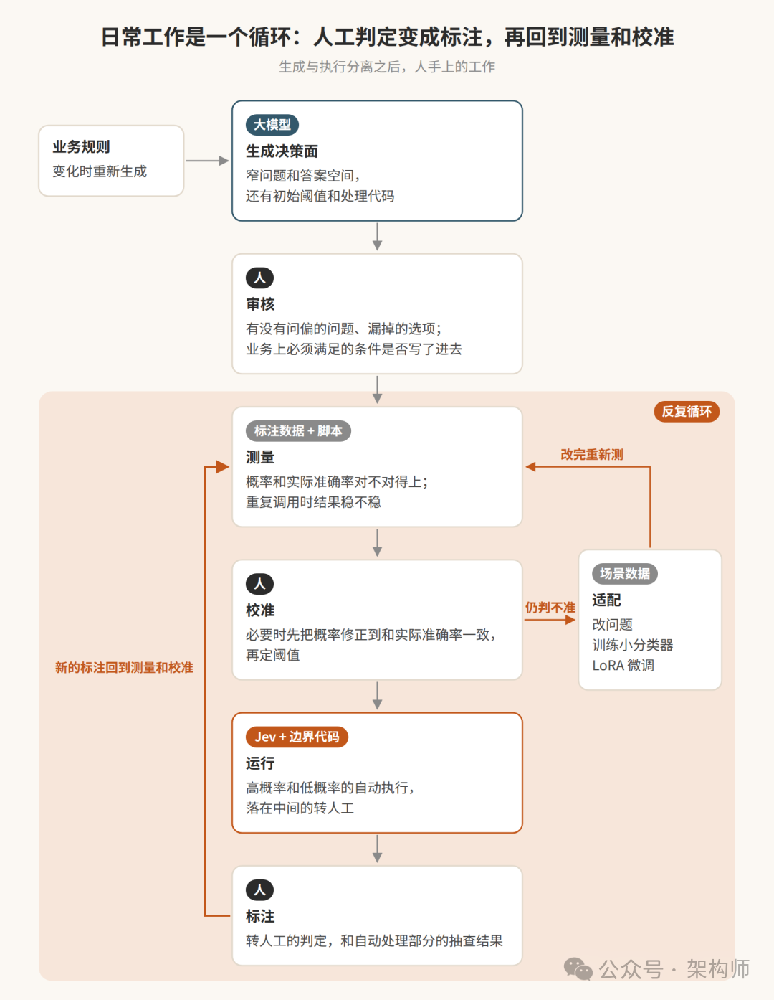

从生成到决策：Jev正在改变LLM应用的开发范式
来源：微信公众号 归档日期：2026-10-01 抓取状态：成功 原文字符：10834｜配图：6 张
摘要速览
- Agent 里的小判断（调不调 bash、转不转人工、选哪个模型、内容留不留）过去都交给通用大模型：为一个 true 支付一次完整文本生成，还要扛格式错误、字段漂移与重试——理解语义与生成文本被绑在一起。TypeSafe 2026-09 发布 Jev：传入状态和问题、返回类型化概率决策，不生成自然语言（System One Model）；开发范式拆成三步：大模型在开发阶段帮人整理业务意图，专用模型运行时回答受限问题，普通代码兜执行。
核心内容
（待补充）
可执行启发
（待补充）
我的想法
（待补充）
原文沉淀
目录
- Agent 里最常见的几个小判断
- 过去的调用方式，把语义判断和执行揉在了一起
- Jev 把“决策面”变成显式产物
- OpenAI 也在把模型输出变成接口
- 新范式发生在开发阶段，而不只发生在推理阶段
- 开发者开始维护决策面
- 为什么“只返回选择”会更快
- 概率不是“正确率”，但它能进入策略
- 它最适合放在 Agent 的三个位置
- 和规则引擎的边界
- 省下的调用，换成了哪些工作
- 新范式的边界
- 参考资料
- 相关阅读：
架构师（JiaGouX）
我们都是架构师！ 架构未来，你来不来？
Agent 里最常见的几个小判断
一个 Agent 要不要调用 bash，要不要把工单转给人工，下一步该选哪个模型，检索到的这段内容要不要留在上下文里。
这些动作看起来很小，却会在一次任务里重复很多遍。过去的常见做法，是把每个问题都交给通用大模型，让它读完状态、写一段解释，再从文字里解析出一个布尔值、一个标签或一组参数。
这条链路能工作，但它把“理解语义”和“生成文本”绑在了一起。为了得到一个 true，系统先支付了一次完整的文本生成；为了得到一个部门名称，系统还要处理格式错误、字段漂移和重试。
TypeSafe 在 2026 年 9 月发布 Jev。调用方传入状态和问题，Jev 返回类型化的概率决策，不生成自然语言。官方称它为 System One Model，面向软件直接调用的决策模型。
放回 LLM 应用的开发过程，Jev 暴露出一个长期混在提示词里的问题：判断逻辑是谁写的，运行时又是谁在执行。这里可以分成三步：大模型在开发阶段帮助人整理业务意图，专用模型在运行时回答受限的问题，普通代码负责分支、权限、回滚和审计。
Jev 的变化不只在于少生成几段文字。它还让“判断逻辑”脱离单次调用的临场发挥，成为可以单独设计和维护的对象。

Jev 的开发阶段与运行阶段
图 1：Jev 把开发阶段的问题设计和运行阶段的语义判断拆开。
过去的调用方式，把语义判断和执行揉在了一起
以营销短信为例。用户回复“别再给我发了”，系统需要判断他是否要求退订、是否在投诉、是否还需要转客服。
用通用大模型时，提示词通常会把背景、规则和输出格式全部写在一起：请阅读这段对话，判断用户意图，并返回 JSON。模型需要完成三件事：理解状态，选择答案，生成符合格式的字符串。业务代码再解析 JSON，决定下一步动作。
问题不只在延迟和费用。只要“用户是否要退订”和“用户是否在投诉”同时成立，模型就可能被迫从互斥的标签中挑一个；只要没有明确的 other 选项，一条完全无关的内容也会被塞进某个合法类别。输出格式正确，并不代表判断正确。
规则引擎也不能覆盖全部情况。TD、T、N、R 这类明确指令可以由代码处理，但“以后别发了”“再发我就投诉”需要理解语义。把所有表达都写成关键词和正则，规则会越来越长，边界也越来越脆。
所以，一个实际系统至少有三种任务：
- 日期、金额、权限和字段校验，交给确定性代码；
- 需要读懂非结构化状态、但答案空间有限的判断，交给决策模型；
- 开放式生成、复杂推理和计划制定，交给通用大模型。
Jev 的意义，是把中间这一层从通用模型的隐式行为里单独拿出来。系统可以先判断任务属于哪一层，再选择代码、决策模型或通用模型来执行。
Jev 把“决策面”变成显式产物
Jev 的接口很克制。调用方提供一段 state，再提出若干个关于这段状态的窄问题。每道题的答案空间在调用前确定，常见的三种原语是：
Noul
：判断一个陈述成立的概率，例如“用户是否明确要求退订”；
Choice
：在有限选项中选择，例如“这条工单更接近支付、物流还是技术”；
Score
：按有序等级评分，例如“风险从低到高是多少”。
同一次请求可以问多个相互独立的问题，服务会并行评估。这里的“独立”很重要：问题之间不能依赖彼此的答案；如果第二个问题必须读取第一个问题的结果，就要拆成两次调用。结果不是一段解释，而是结构化的概率结果：Noul 给出一个陈述成立的概率，Choice 和 Score 还会给出候选分布与置信度。代码拿到结果后，才决定自动处理、转人工还是调用更强的模型。
把短信例子改写成决策面，大致是这样：
state = """
发出的短信：会员日全场 8 折，回复 TD 退订
用户回复：别再给我发了
"""
questions = {
"unsubscribe": {
"type": "noul",
"instructions": "用户是否明确表示不想再收到营销短信？",
},
"complaint": {
"type": "noul",
"instructions": "用户是否在表达对短信或服务的不满？",
},
}
answer = jev(state=state, questions=questions)
if answer["unsubscribe"]["noul"] >= 0.90:
stop_marketing_message()
if answer["complaint"]["noul"] >= 0.80:
create_customer_service_ticket()短信例子里，模型不再直接回答“这条消息该怎么处理”。它只回答两个可复核的问题，动作由代码组合出来。一个回复既可以退订，也可以投诉，不必强行归入一个主类别。需要单选时，则用 Choice 明确列出候选项，并保留 other；需要表达程度时，用 Score，不要把 Noul 的 0.5 当成“中等程度”。
这就是决策面：状态放什么、问题怎样定义、选项允许哪些值、概率如何映射到动作。它不再藏在一段很长的提示词里，而是成为可以审查、测试和版本化的工程产物。

Jev 返回受限问题的概率，代码负责分支
图 2：Jev 返回受限问题的概率，代码根据阈值决定动作。
OpenAI 也在把模型输出变成接口
OpenAI 近期的 Responses API 已经提供了相近的能力。Structured Outputs 可以让 GPT 按调用方给出的 JSON Schema 返回结果；在 Function Calling 中把 strict 设为 true，也可以约束工具参数符合 Schema。用 enum 可以做有限选项，用 boolean 可以做简单的是非判断：
from openai import OpenAI
from pydantic import BaseModel
client = OpenAI()
class Triage(BaseModel):
unsubscribe: bool
complaint: bool
response = client.responses.parse(
model="gpt-6-astra",
input=[{"role": "user", "content": state}],
text_format=Triage,
)
result = response.output_parsed这解决了“输出能不能被程序读取”的问题。OpenAI 官方文档明确区分了 Structured Outputs 和旧的 JSON mode：后者只保证是合法 JSON，前者才按 Schema 约束字段和枚举。模型拒答或响应不完整时，调用方仍要处理相应状态。
但它和 Jev 不是同一种东西。GPT 仍然是生成模型，Schema 约束的是输出形状，不会自动把一次调用变成 Noul、Choice 或 Score 这样的决策原语，也不会因为返回了 0.87 就保证这是可校准的正确率。Chat Completions API 提供的 logprobs 记录的是输出 Token 的对数概率，不能直接当成候选决策的置信度。
所以，OpenAI 的 API 可以用来实现一部分 Jev 式工作流：让 GPT 输出一个布尔值、枚举或工具参数，再由代码执行分支。区别在于，决策问题的定义、阈值校准、回退策略和运行成本仍要由应用自己承担；Jev 则把这些受限判断和概率结果直接放进了模型接口的中心位置。
新范式发生在开发阶段，而不只发生在推理阶段
只把 Jev 概括成“判断交给 Jev，生成交给大模型”，还少了一层。
传统系统通常只有两种做法。第一种是把能写清楚的逻辑全部写成规则，优点是确定，缺点是遇到“这句话到底是什么意思”就开始堆关键词和例外。第二种是把规则、理解和动作一起交给运行时的大模型，接入快，但每次调用都要重新解释策略，还要承担格式、漂移和不可审计的问题。
Jev 对应的是第三种工作流：大模型在开发时起草判断逻辑，专用决策模型在运行时执行判断，代码负责把判断变成动作。大模型仍在系统里，只是从每次请求的临场决策，移到了决策面设计和后续修订。
开发者或编程 Agent 先根据业务规则起草决策面：把“处理退订”拆成几个事实问题，补齐 other 选项，写出候选动作和初始阈值，再由人确认。运行时，Jev 只执行这份已经审核过的决策面，不需要每次重新生成一段业务策略。设计责任仍由开发者和代码承担，Jev 负责把受限问题稳定地跑完；是否采用这套工作流，还要看业务的风险和数据条件。
最后留下的是一份能进评审、能跟着版本走的决策说明：
业务规则 + 样例数据
↓
大模型起草问题、选项和策略代码
↓
人工审核决策面
↓
标注集评测、校准阈值、影子运行
↓
Jev 在生产环境执行语义判断
↓
确定性代码完成分支、权限和回滚
Jev 的开发阶段与运行阶段流程
图 3：大模型在开发阶段起草决策面，Jev 在运行阶段执行判断。
把 Agent 拆开看，Skills 保存可复用的工作知识，Harness 管理上下文、工具和循环，Jev 处理循环里反复出现的细粒度语义判断。三者放在一起时，模型仍然参与系统，但控制流不再全藏在一次模型调用里。
以前，业务逻辑常被压缩成一条提示词，再由模型在运行时临场发挥。现在，提示词里的隐含判断可以被拆成问题、选项、阈值和代码。系统的控制面因此更容易审查，运行记录也更容易回放。代价是开发阶段多了一份需要维护的决策面，后面还要用数据验证它是否比原来的提示词稳定。
开发者开始维护决策面
决策面拆出来，改动的对象也变了。以前改一条业务判断，常见动作是改提示词，再拿几条样例试一遍；提示词、模型输出和后续代码往往混在同一个调用里，出了问题很难定位到底是理解错了、选项漏了，还是阈值设错了。
决策面拆出来以后，代码评审可以直接看到：状态取了哪些字段，问题问的是什么，候选项有没有 other，概率落在哪个区间会触发什么动作。回归测试也不只检查“最后选了哪个标签”，还要看不同概率区间的错误率、自动处理覆盖率，以及问题改写后是否改变了原来的分流结果。
这并不意味着换一个 Jev 版本就能保持行为不变。模型、语言、问题措辞和候选项一旦变化，原来的阈值都要重新测。决策面提供的是清楚的接口和责任边界，稳定性仍然要靠数据和版本管理来证明。
为什么“只返回选择”会更快
Jev 之所以快，先看接口缩小后少了哪些工作。
第一，它不需要逐 Token 生成解释。答案空间已由调用方给出，模型只需计算这些候选的分布。
第二，同一段状态可以同时回答多个相互独立的问题。一次请求里，是否紧急、属于哪个队列、是否需要人工复核，可以一起评估。
第三，结果可以直接进入程序。系统不必先等待一段自然语言，再解析 JSON、检查字段、修复格式并重试。
TypeSafe 当前公开材料给出的端到端响应时间是 70～500 ms，输入价格为每百万 Token 0.042 美元，输出不另收费。官网还展示了约 193.6 倍的速度差和约 444.6 倍的成本差，但官方明确说明，这些数字来自自家设计的工作流，属于真实收益中偏高的一端；官方工作流里的“准确率”也主要是与参考模型答案的一致程度，不等同于覆盖所有场景的人工标注准确率。
独立测试也说明了这一点：公开汇总中，速度倍数从低于 1 到 12.1 不等，成本倍数从低于 1 到 478 不等，具体取决于任务、对手模型和网络条件。这些倍数不能脱离任务单独引用。接入决策模型后，需要同时核算减少的生成调用，以及新增的校准、回退和人工复核成本。
概率不是“正确率”，但它能进入策略
概率不是“正确率”，但它能进入策略。Jev 返回概率后，程序可以把“选项排第一”和“是否足够可靠”分开处理：
- 高置信度、低后果的判断，自动继续；
- 概率落在灰区，调用更强模型或请求人工确认；
- 低置信度或高风险判断，保守回退。
但 0.90 不能天然解释成“在任何任务上都有 90% 的正确率”。官方强调 RLCD（Reinforcement Learning for Calibrated Decisions，面向校准决策的强化学习），而公开材料尚未提供覆盖所有任务的可靠性曲线。换任务或换数据分布后，概率可能偏高，也可能偏保守。
9 月对 92 条营销短信回复做过一轮小测试：同一条短信、两道判断题，换 3 种问题写法和 2 种状态输入，每个组合跑 3 遍，共 1,656 次调用，费用约 0.037 美元。本地测得的延迟中位数约 716 毫秒，最慢一次 3.97 秒，包含网络往返。
反讽式回复“再发一条试试？”在 6 个组合里都没有被稳定识别成拒收，拒收概率只有 0.04～0.29。这个结果只覆盖短信退订，样本也没有经过第三方复核，但它足以说明：问题措辞、上下文和阈值会一起改变动作，不能拿一个漂亮的概率直接放行生产请求。
因此，阈值要从自己的数据里测出来。一个稳妥的接入顺序是：先用历史样本做离线评测，再影子运行只记录概率、不改变现有动作；统计每个概率区间的真实错误率、覆盖率和人工复核成本；最后才把一部分高置信度流量切到自动处理。上线后还要持续抽查自动放行的样本，因为高置信度也可能错。语言、行业术语和文化语境变化时，也要单独做评测，不能把英文样本上的阈值直接搬到中文生产数据。

同一条回复中的多项判断概率
图 4：同一条回复可以同时表现出投诉和拒收，单选题会掩盖这种重叠。
还要记住一件事：类型安全只约束输出形状，不保证语义判断正确。 定义了“支付、技术、销售”三个选项，模型不会返回第四个部门，但它仍然可能在三个合法选项中选错。状态里夹带的提示注入也不会因为答案是枚举值就自动消失。
它最适合放在 Agent 的三个位置
把 Jev 放进 Agent，主要是处理三类反复出现的语义判断。
路由。 先判断请求是简单查询、普通修改还是复杂架构问题，再选择不同成本和能力的模型。路由结果和概率进入运行记录，后续可以分析错分和升级成本。
门禁。 工具调用执行前，判断命令是否修改文件、删除数据、触碰生产资源或绕过权限。高风险动作进入确认或沙箱，低风险动作继续执行。权限控制和沙箱仍由系统负责，Jev 只提供语义信号。
验证。 Agent 说“任务完成”时，判断测试是否真的通过、输出是否满足约束、是否反复执行了同一步骤。能用硬性测试验证的地方继续用硬性测试，Jev 适合补上规则难以表达的语义检查。
LangChain 的公开示例已经把这类用法放进 Agent 中间件：Jev 可以参与模型路由，也可以在工具执行前做风险判断。它没有替代 Agent Loop，只是让 Loop 里原本隐含的判断变成显式节点。
和规则引擎的边界
Jev 很容易让人联想到规则引擎或决策模型标记法（DMN）。相似之处在于：决策面由人定义，分支和责任边界可以审查；不同之处在于，Jev 执行的是需要理解自然语言或非结构化状态的语义判断。
规则引擎擅长“金额超过多少”“日期是否过期”“字段是否为空”。这些逻辑应该继续写成规则，因为它们确定、便宜、可证明。
Jev 处理的是“这段话是否表达了拒收”“这条工单更像物流问题还是支付问题”。它弥补的是规则难以覆盖的语义空隙，但不会让规则维护、样本标注和回归测试消失。
放回一条真实调用链，分工大致是：代码守住硬边界，Jev 提供语义信号，通用大模型负责开放式推理，人工接住灰区和责任问题。模型变多以后，系统边界反而要写得更清楚。
省下的调用，换成了哪些工作
Jev 让运行时的判断代码变短，但工程工作没有消失。原来花在“每次请求生成一段答案”上的时间，转成了审核问题、测量错误、校准阈值和适配新数据。
决策面要经过审核。问题措辞、候选项顺序、other 是否存在、状态里放哪些上下文，都会影响结果；状态越长，越要注意无关内容和提示注入。阈值要经过校准，模型和问题定义变化后还要重新评测。生产数据出现新表达时，决策面需要迭代，不能只改一条提示词然后直接上线。
运行记录也要更完整：至少保存状态摘要、问题定义版本、模型版本、概率分布、最终动作和回退原因。否则线上出错时，只知道“分流错了”，却不知道模型当时看到了什么、哪个阈值触发了动作。问题定义或阈值一旦变更，也应当保留版本并重新跑回归集。

决策面的持续迭代流程
图 5：决策面上线后，工作会回到测量、校准和适配。
更重要的是，要算端到端收益。如果每次请求都先调用 Jev，再调用原来的通用模型，而 Jev 没有减少后续工作，那么系统只是多了一次网络往返。只有当它减少了昂贵调用、提前拦截了危险动作，或者让大量低价值判断可以批量完成，整体收益才成立。
新范式的边界
Jev 还不是通用 AI 模型的替代品。它的准确率、校准能力、跨任务泛化和提示注入防护，都需要在具体数据上验证。复杂因果分析、长链条计划和开放式生成，也不属于它要承担的工作。
这里说的“新范式”，变化发生在 LLM 应用的开发方式上，模型本身并没有因此跨过一个能力台阶。
软件接入模型时，很多地方真正需要的是一个能交给代码处理、纳入监控并明确责任边界的判断，而不是又一段解释文字。判断面经过设计、审核、测量和版本化后，LLM 应用的控制流就有了可以追踪的中间层，不再全部藏在一次提示词调用里。
这会改变 Agent 的设计顺序。先识别哪些动作是确定规则，哪些动作需要语义判断，哪些动作需要深度推理；再为每一类选择代码、专用决策模型、通用模型或人工路径。系统的控制流也不再由模型独占，决策面和执行边界开始成为同等重要的架构对象。
最后看一件事：放到真实数据和真实责任里，决策面是否比原来的提示词更容易读懂、测量和回滚。做不到这一点，Jev 只是多了一层调用；做到之后，判断逻辑才真正进入版本、测试和审计流程。
参考资料
- TypeSafe AI，Introducing System One Models & Jev（2026-09-15）（https://typesafe.ai/blog/introducing-system-one-models-and-jev）
TypeSafe AI，API Reference（https://docs.typesafe.ai/api）
- LangChain，Building a Harness with Jev（https://www.langchain.com/blog/building-a-harness-with-jev）
- Diogo Almeida，Latent Space 播客《Jev: System One models for Prod, not God》（2026-09-21）（https://www.latent.space/p/jev）
- Sean Goedecke，Jev means structured output is interesting again（2026-09-16）（https://www.seangoedecke.com/jev-means-structured-output-is-interesting-again/）
- Akshay Pachaar，Jev Clearly Explained（2026-09-19）（https://x.com/akshay_pachaar/status/2101037514945597645）
- 阿蔺 A-Lin，Jev 入门指南与四个开源项目（2026-09-22）（https://x.com/alin_zone/status/2102005271849734462）
doronp/jevc，GitHub（https://github.com/doronp/jevc）
- xbill，Jev After Eight Days of Independent Tests（2026-09-24）（https://dev.to/aws-builders/jev-after-eight-days-of-independent-tests-level-with-mid-price-llms-behind-the-frontier-1c60）
- OpenAI，Structured model outputs（https://developers.openai.com/api/docs/guides/structured-outputs）
- OpenAI，Function calling（https://developers.openai.com/api/docs/guides/function-calling）
- OpenAI API Reference，Chat Completions：Create（https://developers.openai.com/api/reference/resources/chat/subresources/completions/methods/create）
如喜欢本文，请点击右上角，把文章分享到朋友圈
如有想了解学习的技术点，请留言给若飞安排分享
因公众号更改推送规则，请点“在看”并加“星标”第一时间获取精彩技术分享
·END·
相关阅读：
- Loop Engineering，应该赞成还是反对？
- Claude 做方案，Codex 写代码：多模型协作怎么交接才稳
- 架构排熵：Loop Engineering 的持续清理系统
- CLAUDE.md 拆解：Agent 进仓库前的上下文入口
- Harness工程还没唱罢，Environment工程已然登场
- 设计 Self-Harness 架构：会自我改进的Harness
版权申明：内容来源网络，仅供学习研究，版权归原创者所有。如有侵权烦请告知，我们会立即删除并表示歉意。谢谢!
架构师
我们都是架构师！

关注架构师(JiaGouX)，添加“星标”
获取每天技术干货，一起成为牛逼架构师
技术群请加若飞：1321113940 进架构师群
投稿、合作、版权等邮箱：admin@137x.com
归属：[[02-输入/按主题/AI与效率/_index|AI与效率]]